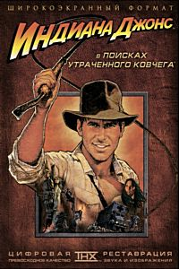
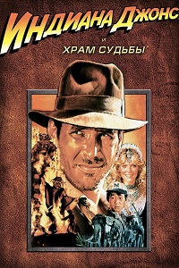
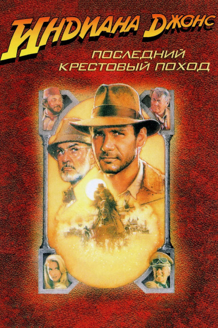
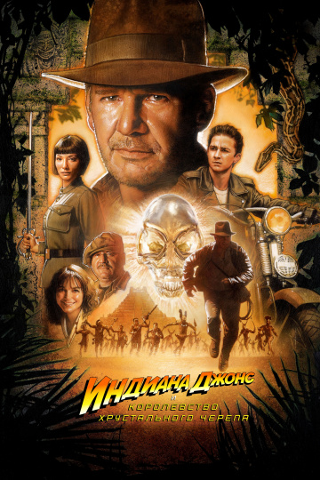

Знаменитый профессор истории и искатель приключений получает специальное задание от правительства США – найти утерянный Ковчег. Джонс еще не подозревает, что это же поручение получили приспешники Гитлера. В одиночку мужчине придется противостоять немецкой армии, чтобы доставить древнюю реликвию в США.

В самом центре Гималаев находится некий храм Судьбы. По мнению профессора Джонса, служители оного охраняют знаменитый священный жезл. По легенде этот жезл наделяет своего хозяина могучей силой. Герою предстоит выкрасть реликвию и доставить в музей США.

Джонс узнает, что совсем недавно была найдена чаша – Священный Грааль. Всем кто выпьет из нее, она дарует вечную молодость. Сейчас артефакт находится у Гитлера, а значит, мужчине вновь предстоит встретиться с армией фашистов.

В этот раз герою сулит самое сложное задание. Существует легенда о хрустальном черепе, с помощью которого можно управлять волей людей. Этот магический предмет и предстоит отыскать профессору вместе с родным сыном, таким же неугомонным парнем.